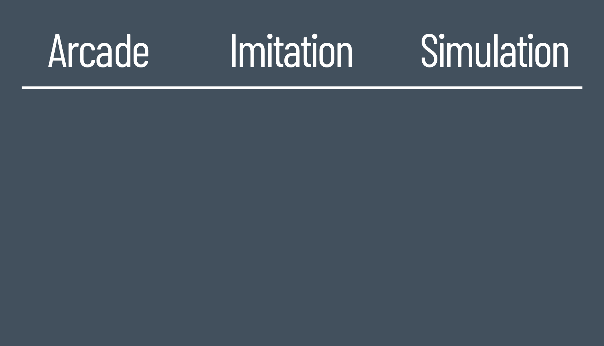
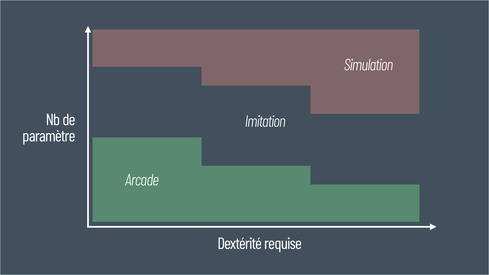

Ce texte est le script utilisé pour la vidéo pensée binaire #01
Il y a quelques semaines est sortie Cairn. Vous en avez sûrement entendu parlé, c’est ce jeu d’escalade fait par les créateurs de Furi et Haven. Avant même d’avoir joué à ce jeu, je savais qu’il me plairait, j’avais d’ailleurs évité la démo pour conserver le plaisir de découverte entier à la sortie du jeu. J’étais donc impatient d’y jouer et mon instinct ne s’était pas trompé, j’ai adoré ce jeu et cette ascension de 13h du mont Kami restera gravée dans ma mémoire de joueur.
Mais pourquoi je savais que ce jeu allait me plaire ? Et bien parce qu’il s’inscrit dans un courant un courant de jeu plutôt en vogue récemment ; vous savez ces jeux où on fait semblant de faire des trucs compliqués mais sans que ce soit chiant.
On pense naturellement à Death Stranding qui a ouvert la voie mais qui n’est pas le premier. Je me suis donc demandé comment appeler ce genre ? Déjà parce qu’avec les années c’est un « style » que j’aime bien et parce que nommer et définir les choses, c’est leur permettre d’exister.
C’est notamment toute la réflexion autour de la Novlangue décrite dans 1984 dont le but est la suppression de terme, l’appauvrissement du vocabulaire parce que si l'on n’a plus les mot pour décrire nos idées, elles disparaissent. La création de nouveau mot n’est donc jamais de la novlangue, quoi qu’en pensent nos congénères de droite
J’ai donc réfléchit et comme toutes les bonnes idée c’est sous la douche que j’ai eu une épiphanie, ce sont des jeux d’imitation .
Alors ce terme vous l’avez peut être déjà entendu. Les jeux d’imitation c’est l’ensemble des jouets qui permettent aux enfants de reproduire des activités du quotidien, de faire comme leurs parents. C’est la dinette pour faire à manger, ou les poupons pour jouer aux parents.
Mais pourquoi utiliser ce terme pour le jeu vidéo ? Et bien parce que dans les deux cas ils consiste de faire semblant de faire quelque chose de réaliste sans trop de contraintes.
Ainsi dans le jeu vidéo, cela se traduit par un gameplay assez exigeant pour nous faire ressentir la difficulté ou la pénibilité de l’effort mais tout en étant assez tolérant et souple pour assurer une satisfaction relativement rapide.
Dans Cairn, nul besoin de gérer le poids du sac à dos, la rarefaction de l’oxygène, la pression mise sur chacun de nos doigts ni de faire soi même ses nœuds de huit. Par contre il faut quand même positionner avec precision chacun de nos membres, ne pas se brusquer mais pas trainer et bien penser notre parcours pour grimper sans chuter.
On retrouve globalement le fameux 80/20.
20% de réalisme pour 80% des sensations.
On peut donc créer une nouvelle classification à 3 colonnes où on aurait, d’un côté les jeux d’arcade (si vous avez un autre terme je suis preneur), où là, le réalisme n’a pas de prise, seul le plaisir de jeu immédiat est recherché.
D’un autre côté les jeux de simulation, où on va chercher à tendre vers le réel et le respect de ses contraintes quite à rendre très lointain le plaisir de jeu.
Et entre les deux on va retrouver les jeux d’imitations. On fait semblant, la suspension d’incrédulité nous permet de croire et ressentir les efforts de la situations et sans que le plaisir de jeu soit pollué par un gameplay trop complexe.

On peut ainsi qualifier beaucoup de jeux au regard de cette nouvelle classification.
Prenons des exemple :
Les jeux de courses :
· Arcade , on va avoir Ridge Racer ou Mario Kart
· Simu : on va retrouver des Asseto Corsa
· Imitation , on peut mettre The Crew ou Driveclub (rappelez vous de cette pepite)
On peut faire
Les jeux de tir:
· Arcade : on va avoir Doom ou les derniers Call of
· Simu : on va retrouver des Arma
· Imitation : on peut mettre les Rainbow six, Ghost Recon ou CS
Mais cela marche aussi avec des activités un peu plus éloignée du réel :
Les affrontement à l’épée :
· Arcade : on va avoir les Zelda 3D
· Simu : on peut retrouver quelque chose comme Chivalry où les coups sont donnés en définissant l'angle et l'inclinaison de son épée.
· Imitation : la série des Dark Souls où il est tout de même nécessaire prendre en compte le poids de son équipement et son endurance.
Enfin on peut aller encore plus est totalement se détacher du réel et de la simple reproduction plus ou moins fidèle d’actions. Notamment avec des jeux plus abstraits et ne reposant pas sur une interaction précise sur notre controleur.
Par exemple les city builder :
· Arcade : animal crossing
· Imitation : on peut avoir Sim city
· Simulation : Dwarf Fortress ou City skyline (qui à ma connaissance sont plus compliqués que sim city, mais je ne suis pas expert).
Au final tout ça s’appuie sur 2 paramètres :
· La dextérité requise / exigée pour réussir les actions.
· Le nombre de paramètre du système de jeu.
Et on peut donc facilement et approximativement classer les jeux dans un espace en 2 dimensions.
Peu de dextérité et peu de paramètre, c'est de l'arcade. À l'inverse, beaucoup de dextérité et de paramètres, c'est de la simu. Toutefois, ces catégories vont chacune avoir un paramètre ascendant. La dextérité pour l'arcade, et le nombre de paramètre pour la simulation. Ce qui signifie qu'un jeu de rythme (type beatmania IIDX) qui repose sur beaucoup de dextérité mais très peu de paramètres ("juste" taper sur les 8 notes possibles au bon moment) reste de l'arcade. Et inversement pour les jeu de simulation (cf les city builder et autre jeu de gestion)
Et entre les 2 flote les jeux d'imitation.

Maintenant qu’on a dit ça, qu’est ce qu’on en fait ?
Comme je disais au départ, ça nous fait un adjectif de plus qualifier avec précisions un jeu quand on en discute.
Après, et c'est là que j'y vois le plus d'intérêt, ça peut être utilisé comme critère lors de la création de jeu. Aussi bien pour circonscrire notre gameplay (si je fais un jeu d’arcade, veiller à limiter mon nombre de paramètre) que pour identifier notre public cible (au vu de mon gameplay, est-ce que c’est plutôt un jeu pour des joueurs de simu, d’arcade, ceux qui à la frontière et souhaite passer à une expérience différentes …)
Enfin, ne prenez pas pour argent comptant tout ce que je raconte, on est a mis chemin entre du « doigt mouillé » et du bar PMU en terme de fondement.
À vous de me dire si c'est utiles.